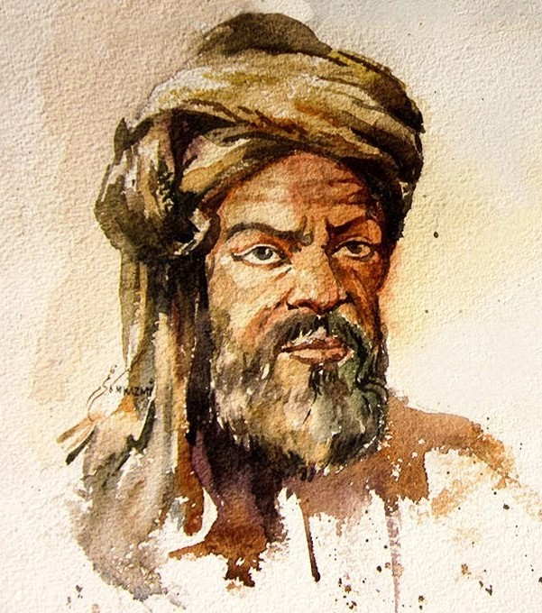

عندما تحدّثت الأرقام…
من معادلات الصمت… إلى لغة الخلود

محمد بن موسى الخوارزمي
في ليلةٍ من ليالي بغداد، حيث كانت الشُّعلة لا تزال مضاءة في بيت الحكمة، جلس رجلٌ مُنهمكٌ بين كُتبه ومخطوطاته، يُحدّق في الأرقام كمن يحاول فك شفرة الكون. لم يكن أحدٌ يعلم أن هذه الليلة ستُغير التاريخ، وأن العقل الذي يعمل بصمت في تلك الزاوية سيضع حجر الأساس لعلمٍ جديد.
بينما كان يغمس ريشته في الحبر، انطلقت فكرةٌ كبرقٍ خاطفٍ في ذهنه. وقف فجأة، وتقدّم نحو النافذة، يُحدّق في السماء حيث تتلألأ النجوم كمعادلات كونية لم تُحل بعد.
"ماذا لو استطاعت الأرقام أن تحل المشكلات بدلًا من الكلمات؟ ماذا لو وُجد نظامٌ يستطيع التنبؤ، الحساب، والتصحيح؟"
لم تكن فكرةً عادية، بل كانت مولد علمٍ جديد. بدأ يخط بيده المعادلات على الورق، يُدوّن الأسس، يُرتّب الأفكار... ولم يكن يعلم أنه بذلك كان يرسم طريق المستقبل. بعد ساعاتٍ من التفكير والتجريب، ارتسمت على وجهه ابتسامة النصر. لقد وُلِد الجبر.
لكن القصة لم تنتهِ هنا... فبينما كان يسطر قوانينه، لم يكن يعلم أن اسمه لن يُنسى، وأن تلك المعادلات ستعبر البحار، وستصل إلى الغرب، لتصبح اللبنة الأولى في بناء الحواسيب، وتقنيات الذكاء الاصطناعي، وكل ما يعتمد على الحساب والمنطق.
وفي الظل، وبين صفحات الكتب، بقي اسمه خالدًا... "الخوارزمي"..
الخوارزمي... العقل الذي أدار عجلة الأرقام
الفصل الاول
ولادة في أرض المعرفة
في أقصى بقاع بلاد ما وراء النهر، حيث تلتقي الرياح الباردة بنسمات الشرق الدافئة، وُلد طفلٌ لم يكن يعلم أن اسمه سيصبح مفتاحًا لأعظم الثورات العلمية. في مدينة خوارزم، حيث الأسواق تعجّ بالباعة، والمساجد تتردد فيها أصوات العلماء، نشأ هذا الطفل في بيتٍ يقدّس العلم، حيث كان الحبر أثمن من الذهب، والمخطوطات كنزًا لا يضاهى. منذ صغره، أظهر الفتى ولعًا غريبًا بالأرقام. لم يكن كالأطفال الآخرين الذين يلهون بالخشب أو الطين، بل كان يلتقط الحصى ويرتبها في أنماط هندسية، كأنه يحاول محاكاة لغة الكون. ومع مرور الأيام، تزايدت الأسئلة في عقله الصغير، أسئلة لم يكن يدرك أنها ستغير العالم:
- لماذا تسير النجوم في مسارات محددة؟
- كيف تُحسب أوقات الصلاة بهذه الدقة المذهلة؟
- هل يمكن كتابة لغة يفهمها الجميع دون الحاجة إلى كلمات؟
أسئلة بدت بسيطة آنذاك، لكنها كانت بوابة لعصر جديد من المعرفة!
.jpg)
الفصل الثاني
الطريق إلى بغداد
كانت بغداد في ذلك العصر درّة المدن، عاصمة العلم والمعرفة، حيث يقصدها الحكماء من كل أصقاع الأرض. وفي يومٍ مشهود، حمل الفتى أوراقه القليلة وانطلق مع قافلة تجارية نحو هذه المدينة الأسطورية، دون أن يعلم أن اسمه سيُحفر في جدران بيت الحكمة إلى الأبد.
ما إن وطأت قدماه تلك الأرض حتى شعر أن هذه المدينة تختلف عن كل ما عرفه. في كل زقاق، كان يجد شيخًا يُجادل في الفلسفة، أو شابًا يناقش معضلةً رياضية. لكن هناك مكانٌ واحدٌ جذب انتباهه أكثر من أي شيء آخر…
الفصل الثالث
بيت الحكمة – حيث تُصنع المعجزات
.jpg)
كان بيت الحكمة أشبه بمدينة داخل المدينة، مكتبة عظيمة، ومرصد فلكي، وملتقى لأذكى العقول. كان المكان مزدحمًا بالعلماء من فارس، والهند، واليونان، والعالم العربي، كلهم يسعون لفهم العالم عبر العلوم والفكر.
وقف أمام البوابة الحجرية، مترددًا للحظة، لكنه لم يكن ليعود أدراجه الآن. دخل بخطواتٍ واثقة، غير مدرك أنه بعد سنوات قليلة، سيصبح أحد أعمدة هذا الصرح العظيم. هناك، تعرّف على علوم الإغريق، وحسابات الهنود، ونظريات الفرس، لكنه لم يكن مكتفيًا بالتعلم فقط… أراد أن يضيف شيئًا جديدًا، علماً لم يكتشفه أحد من قبل.
الفصل الرابع
ولادة علم الجبر
.jpg)
في إحدى الليالي، وبينما كان يُراجع مخطوطات قديمة، اصطدم بمشكلة عويصة.
كانت هناك معادلات لم يكن حلّها واضحًا، وكان الفلاسفة السابقون يعتمدون
على الأساليب الهندسية فقط لفهمها. لكن عقله لم يكن يقبل بالطرق القديمة،
فبدأ بطرح فكرة جريئة:
"ماذا لو تمكنّا من حل هذه المسائل بطريقة عامة، دون الحاجة إلى الأشكال الهندسية؟ ماذا لو استخدمنا رموزًا خاصة لتوضيح العلاقات الرياضية؟"
بدأ يكتب، يمسح، يعيد التفكير، يحسب، يجرب… حتى ولد مفهوم جديد،
"الجبر"، وهو اسم مستوحى من عمليات الجمع وإعادة التوازن. لم يكن
الأمر مجرد وسيلة لحل المعادلات، بل ثورة علمية كاملة، سيعتمد عليها العالم
لمئات السنين.
لم يدرك حينها أن كتابه "المختصر في حساب الجبر والمقابلة" سيكون أحد أهم
الكتب التي ستُترجم لاحقًا إلى اللاتينية، وأن علماء أوروبا سيعتمدون عليه
في بناء أسس رياضياتهم الحديثة.
الفصل الخامس
فك شفرة الكون بالأرقام
لكن الخوارزمي لم يكتفِ بذلك. فقد سمع عن نظام عددي غريب قادم من الهند،
نظام يستخدم الصفر!
تلك الفكرة أدهشته، فرأى فيها مفتاحًا لحل معضلات رياضية معقدة.
أخذ على عاتقه نشر هذا النظام في العالم الإسلامي، وكتب عنه، وشرحه،
حتى أصبح النظام العشري هو المعيار المستخدم عالميًا. لكن الإنجاز الأعظم
لم يكن في الأرقام فقط، بل في ابتكار شيء لم يكن موجودًا من قبل… "الخوارزميات".
"ماذا لو كان هناك منهج واضح لحل أي مشكلة حسابية خطوة بخطوة؟"
-> وهكذا، وُلدت الخوارزميات (Algorithms)، التي ستصبح حجر الأساس
لعلوم الحاسوب الحديثة بعد قرون من وفاته <-
.jpg)
الفصل السادس
النجوم والأرض… بين الحساب والفلك
لم يكن الخوارزمي رياضيًا فقط، بل كان أيضًا عالم فلك وجغرافيا. كتب كتابًا عن الزيج الفلكي، حيث حسب مواقع الكواكب والنجوم بدقة لم تكن معهودة في زمانه.

كما أنه أعاد رسم خريطة الأرض بناءً على حساباته، وصحّح أخطاء الجغرافيين السابقين، لتصبح أكثر دقة من أي وقتٍ مضى.
الفصل السابع
.jpg)
"حين أبحر الخوارزمي إلى ما وراء الأرقام…"
في إحدى الليالي الحالكة من ليالي بغداد، وبين أروقة بيت الحكمة، جلس محمد بن موسى الخوارزمي ممسكًا بقصاصة ورقية قديمة، تُطوى عليها معادلة غامضة، نقشها أحد العلماء الإغريق قبل قرون.
عيناه كانتا تتقدان فضولًا، وأصابعه تلامس الأحرف كأنها تبحث عن همسات مخفية بين السطور.
لكن ما لم يكن يعلمه أحد…
أن الخوارزمي لم يكن مجرد عالم أرقام، بل كان مستكشفًا للأفكار الضائعة!
سرّ الأرقام المفقودة!
ذات صباح، استدعاه الخليفة المأمون، وهو يمسك بمخطوطة عتيقة، وصلته من عالم بيزنطي في القسطنطينية.
"يُقال إنها تحمل مفتاحًا لفهم أسرار الحساب يا أبا عبد الله، فهل تقدر على كشف اللغز؟"
قبض الخوارزمي على المخطوطة، وبدأ يحدق فيها مطولًا… لكنها لم تكن مكتوبة بالحروف العربية، ولا حتى باليونانية! كانت لغة غامضة، أشبه برموز متشابكة.
استغرق أيامًا وليالي محاولًا فك الطلاسم… حتى اكتشف أن تلك الرموز ليست مجرد حروف، بل كانت أرقامًا هندية!
وهكذا، كان الخوارزمي من أوائل العلماء الذين أدخلوا الأرقام الهندية إلى العالم الإسلامي، والتي أصبحت فيما بعد الأرقام التي نستخدمها اليوم!
.jpg)
لقاء غامض مع رجل الظلّ
وذات ليلة، بينما كان يعمل على مخطوطاته في بيت الحكمة، لاحظ رجلًا ملثمًا يقترب من طاولته. لم يكن من طلاب العلم، ولم يكن من الحراس… همس له بصوت خافت:
"أنت تبحث في الأرقام يا خوارزمي، لكن هل فكرت يومًا في الفراغ الذي يفصلها؟"
رفع الخوارزمي حاجبيه بدهشة…
"ماذا تعني؟"
ضحك الرجل بخفوت، ثم ألقى بين يديه قطعة صغيرة من ورق البردي، مكتوب عليها:
(٠)
كان ذلك أول لقاء للخوارزمي مع مفهوم
الصفر!
هذا الرقم الذي سيغير مستقبل العلم كله. ومنذ ذلك الحين، بدأ في تطوير مفهوم الصفر كرقم مستقل، وجعله جزءًا من نظام العدّ، ليصبح حجر الأساس في كل ما نعرفه عن الحساب والبرمجة اليوم!
عندما كاد أن يُحرق كتابه!
في أواخر حياته، وبينما كان يراجع كتابه الأشهر
"المختصر في حساب الجبر والمقابلة"،
دخل عليه أحد الفقهاء غاضبًا، وهو يصرخ:
"ماذا فعلت يا خوارزمي؟
أأنت تحاول أن تحكم العالم بالأرقام؟
الحساب يجب أن يبقى بسيطًا، فلماذا تملأه بالمعادلات والرموز؟"
أمسك الفقيه بالكتاب، وهمّ بإلقائه في النار… لكن الخوارزمي لم يتحرك.
ابتسم بهدوء وقال:
"أنت ترى الرموز، لكني أرى المستقبل…"
لحسن الحظ، أوقفه الخليفة قبل أن يحرق المخطوطة،
وظلّ الكتاب محفوظًا، ليكون أول كتاب يؤسس علم
"الجبر"،
الكلمة التي نستخدمها اليوم في كل بقاع الأرض!
 (1).jpg)
إرث الخوارزمي الخفيّ… هل اكتمل؟
 (2).jpg)
ليوم، بعد قرون طويلة… لا تزال معادلات الخوارزمي تحكم عالمنا،
من أصغر تطبيق على هاتفك، إلى أعقد رحلة فضائية تقوم بها البشرية.
لكن السؤال الحقيقي…
هل كان للخوارزمي ألغاز أخرى لم تُكتشف بعد؟
هل هناك مخطوطات مفقودة، تنتظر من يحلّ رموزها؟
ربما… وربما ذات يوم، سيجد أحدهم تلك القصاصة القديمة
التي ظلّ يحملها الخوارزمي معه دائمًا، لكنه لم يُفصح عنها لأحد.
الفصل الثامن
الرحيل… وبداية الخلود
بعد سنواتٍ طويلة من البحث والكتابة، أدرك الخوارزمي أن رحلته العلمية قد شارفت على الانتهاء. جلس في إحدى زوايا مكتبته، يتأمل المخطوطات التي ملأ بها هذا العالم بالحسابات والمعادلات، مستشعرًا أن إرثه سيبقى خالدًا حتى بعد رحيله.
وفي أحد الأيام، ودون أن يشعر العالم، أُغلقت أوراق كتاب حياته، لكن أعماله ظلّت مفتوحة على امتداد الزمن. ستظل نظرياته تُدرّس، وأرقامه تُستخدم، وأفكاره تلهم الملايين من العلماء والمبتكرين.
لم يكن يعلم أن اسمه سيتحول إلى مصطلح عالمي، وأن كل حاسوب، وكل برمجة، وكل معادلة في العصر الحديث، تحمل في طياتها شيئًا من فكره…
.jpg)
وفاته
"رحل الخوارزمي، لكن علمه لم يمت… بل أصبح نبض العالم الرقمي."
توفي في بغداد حوالي عام 850م، لكن إرثه العلمي لا يزال خالدًا حتى يومنا هذا.